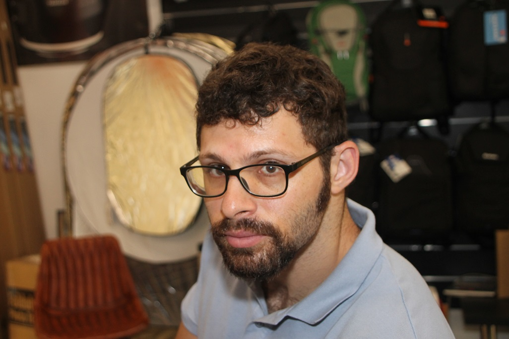

"מילי, איזה סיפור נהדר. הרמת אותי לגבהי הדמיון והנחתת אותי לקרקעית המציאות מספר פעמים וכל זאת בסיפור קצר. צריך כישרון מיוחד בשביל זה." גאולה שינה, סופרת ומשוררת
"מעקבים" - ספר הרפתקאות חדש!
הספר שלי הודפס ונמכר עכשיו לכבוד הקיץ!
"שנות האלפיים המוקדמות, האלף השלישי מאז התחילו לספור. אז הכרתי את מירורשיידס. הכרנו באינטרנט, בעולם הדיגיטלי שדרכו כל העולמות מתחברים, והכול נעשה אפשרי. היה לי נוח עם זה, להיות חסר גוף, שם או צורה. שם, תחת מעטה אנונימיות, אנשים יכלו להגיד בדיוק את מה שהם חשבו. הם היו יכולים לפרסם סיפורים או שירים, או לשתף בחוויות אישיות. כותבים ונערות וילדים, אנשים מטורפים, חוקרים מיתולוגיות אבודות וממציאים את העולם.
מירורשיידס ואני שוטטנו כל הזמן במרחב הזה ולכן טבעי שדרכינו הצטלבו, ומצאנו זה את זה כמו אחים אובדים. הוא ידע הכול. ואחרי מספר שנים של היכרות וירטואלית הייתה לנו הזדמנות להיפגש ואני עליתי על הרכבת לחולון, עולם אחר לגמרי, כדי למצוא אותו."
הייתי בערך בן 17 כשנסעתי לחולון, לכנס עולמות למדע בדיוני ופנטזיה, שבו הכרתי את החברים הכי קרובים שלי. הפשטות שהייתה אז, התום, הכנות והאינטימיות, הם דברים שכל כך חסרים לנו בעולם היום. לכן אני כל כך אוהב את הספר הזה, שמזכיר אותם ומעודד. אין אדם שגדל בתחילת שנות האלפיים ולא יזדהה עם החוויות המתוארות כאן.
"ציפורים מנייר" הוא הסיפור הראשון בקובץ "מעקבים". הוא מתפרש על פני שלוש שנים בחיי הגיבורים ומספר על החוויות שלהם גם ממעוף הציפור, וגם בירידה לפרטים. הוא מתאר בצורה יפה, גם נוסטלגית, את חיי הלילה בחיפה, על חוף הים, ביערות הכרמל, ובעיקר את החברות האמיצה ואת רוח הנעורים של קבוצת חברים בגיל הצבא, בתחילת חייה, כשכל האפשרויות פתוחות והכול אפשרי.
את הסיפור המלא אפשר לקרוא כאן: "ציפורים מנייר - סיפור קצר".
מי אני?
היי, אני מילי. ואני סופר. הייתי רוצה לספר לך כמה קשה היה לכתוב את הספר הזה, איך כמעט התייאשתי מרוב חיפוש השראה, וכל הסיפורים הרומנטיים והיפים האלה. אבל האמת שהיה קל מאוד לכתוב את "מעקבים". כשזה ספר שמיני שלך ואתה סופר מקצועי אתה כבר יודע מה אתה עושה, וגם רואים את זה. הגעתי למקום הזה אחרי עבודה קשה מאוד, ו"מעקבים" הוא התוצאה. ספר שחובה לקרוא!
רוב הסיפורים בספר נכתבו בתקופת זמן די קצרה ושכבו על המחשב שלי שנים, עד שזכו לצאת לאור בתור הספר השמיני והאחרון שלי. כל כך קשה להיות סופר בישראל, אבל לקחתי נשימה ובמשך שנים כתבתי את כל מה שחשוב להגיד, למרות כל הקשיים. "מעקבים" הוא סיום למסע הארוך הזה, המייאש ומהנה בו זמנית, והוא הסיום הטוב ביותר שהייתי יכול לבקש. ספר שאסור להחמיץ, עכשיו במהדורה מוגבלת.
"הספר 'מעקבים' של מילי שמידט מצליח להזכיר כמה כיף היה להיות צעיר, אבל גם כמה זה היה מסובך!"
אורי מאיר, מוציא לאור, הוצאת רסיס נהרה

לא ידעתי שזה יהיה הספר האחרון שלי. זה פשוט קרה.
"מעקבים" הוא ספר של אהבת החיים. הוא ספר ההרפתקאות שתמיד רציתי לכתוב, ספר הרפתקאות קסום, כיפי ומצחיק, על חברות ואהבה. עכשיו הספר הודפס מחדש, והוא נמכר במחיר מיוחד לקיץ. אני לא יודע אם יודפס שוב, ומספר העותקים מוגבל.
מהרו לרכוש את הספר בקלות בעמוד הזה!
ז'אנר: ספרות ספקולטיבית
הוצאה: רסיס נהרה
שנה: 2020
עמודים 183
מחיר: 70 שקלים